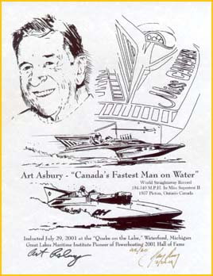
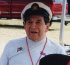

|
 |
On July 29 2001 at Quake On The Lake, Art Asbury was inducted into
the Great Lakes Maritime Institute "Pioneers of Powerboating" 2001
Hall Of Fame for his accomplishments in power boat racing.
Art is "Canada's Fastest Man On Water", with a top speed of 184.540MPH in Miss Supertest II in 1957 (Picton, Ontario). He has accumulated many championships throughout his illustrious career. To commemorate the event, artist Ray Dong has created a limited edition of 60 prints signed by Art and himself. Click on the image at the left to see a larger version. |
|
Here's Denise Taylor's photos of
the award ceremony:
 After the event, Art sent this note of thanks to Ray and everyone that helped. See a scan of Art's 1957 UIM World Record certificate @ 184.54 MPH . For more details about Art's accomplishments, see his own web page at http://www.geocities.com/artasbury. Be sure to see the photo albums! |
|
|